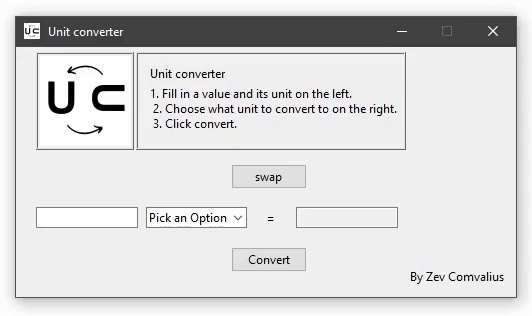

Unit converter

I found myself looking up unit converters online a bit too often, so i made my own. It converts a certain value in one unit to a corresponding value in another unit. I created a nice UI to make it easy to use. The code also allows new units to be added easily.
Take a look at the code here:
# Import all the needed packages
import tkinter as tk
import tkinter.ttk as ttk
from tkinter import PhotoImage
# Create window with Tkinter
window = tk.Tk()
window.title(" Unit converter ")
window.geometry("500x250")
window.resizable(False, False)
window.iconbitmap('C:/Users/Zev/Desktop/Coding/unit converter assets/U.ico')
outputlist = []
combo2 = ttk.Combobox(window, values = outputlist, width = 13, state = "readonly")
# Function to update the output box to the converted value, using math and the conversion constants
def convert():
output.set(
round(
(float(input.get()) * data[combo1.get()]['std'] + data[combo1.get()]['offset'] * data[combo1.get()]['std'] )
/
data[combo2.get()]['std'] - data[combo2.get()]['offset']
, 6))
#Define conversion constants of every unit
data = {
"Meter": {
"std": 1,
"offset": 0,
},
"Kilometer": {
"std": 1000,
"offset": 0,
},
"Mile": {
"std": 1609.344,
"offset": 0,
},
"Foot": {
"std": 0.3048,
"offset": 0,
},
"Celsius": {
"std": 1,
"offset": 273.15,
},
"Fahrenheit": {
"std": 5/9,
"offset": 459.67,
},
"Kelvin": {
"std": 1,
"offset": 0,
},
"Kilogram": {
"std": 1000,
"offset": 0,
},
"Gram": {
"std": 1,
"offset": 0,
},
"Stone": {
"std": 6350.29318 ,
"offset": 0,
},
"Pound": {
"std": 453.59237 ,
"offset": 0,
}
}
# Function that swaps input and output boxes
def swap():
global combo1
global combo2
temp = combo1.get()
combo1.set(combo2.get())
combo2.set(temp)
temp2 = inputbox.get()
input.set(outputbox.get())
output.set(temp2)
# Function that updates the output unit box to only view valid units (that correspond to the input unit)
def mode(eventObject):
global outputlist
global combo2
print(eventObject)
print(combo1.get())
if combo1.get() == "Pick an Option":
outputlist = []
if combo1.get() == "Gram" or combo1.get() == "Kilogram" or combo1.get() == "Stone":
outputlist = ["Gram", "Kilogram", "Stone"]
if combo1.get() == "Meter" or combo1.get() == "Kilometer" or combo1.get() == "Mile" or combo1.get() == "Foot":
outputlist = ["Meter", "Kilometer", "Foot", "Mile"]
print("it works")
if combo1.get() == "Celsius" or combo1.get() == "Fahrenheit" or combo1.get() == "Kelvin":
outputlist = ["Celsius", "Fahrenheit", "Kelvin"]
print("it works")
combo2 = ttk.Combobox(window, values = outputlist, width = 13, state = "readonly")
combo2.place(x=390,y=160)
# input entry box
input = tk.StringVar()
inputbox = ttk.Entry(window, width = 16,textvariable=input)
inputbox.place(x=20, y=160)
# output entry box
output = tk.StringVar()
outputbox = ttk.Entry(window, width = 16, textvariable=output, state = "readonly")
outputbox.place(x=280, y=160)
# list of units in that can be chosen
inputlist = ["Meter", "Kilometer","Foot", "Mile", "Gram", "Kilogram", "Stone", "Pound", "Celsius", "Fahrenheit", "Kelvin" ]
outputlist = []
# the box that lets you choose the unit of the input
combo1 = ttk.Combobox(window, values = inputlist, width = 13, state = "readonly")
combo1.set("Pick an Option")
combo1.place(x=130,y=160)
# run the mode function when an input unit is chosen
combo1.bind("<>", mode)
# Create the equals sign
equals = tk.Label(window, text = " = ")
font=("Calibri 30 bold")
equals.place(x=245, y=160)
# Create the swap button
btn1 = ttk.Button(window, text="swap", command=swap)
btn1.place(x=215,y=117)
# Create the convert button
btn2 = ttk.Button(window, text="Convert", command=convert)
btn2.place(x=215,y=200)
# Create a frame
frame = ttk.Frame(window, width = 270, height = 98)
frame.place(x=120,y=5)
frame['borderwidth'] = 2
frame['relief'] = 'ridge'
# Create another frame
frame2 = ttk.Frame(window, width = 90, height =90)
frame2.place(x=20,y=5)
frame2['borderwidth'] = 2
frame2['relief'] = 'ridge'
# Text
title = ttk.Label(frame, text = "Unit converter")
font=("Calibri 30 bold")
title.place(x=10,y=10)
credit = ttk.Label(window, text = "By Zev Comvalius")
font=("Calibri 30 bold")
credit.place(x=392,y=220)
label = ttk.Label(frame, text = "1. Fill in a value and its unit on the left.
2. Choose what unit to convert to on the right.
3. Click convert.")
font=("Calibri 30 bold")
label.place(x=10,y=30)
print(combo1.get())
# Image
image = PhotoImage(file="C:/Users/Zev/Desktop/Coding/unit converter assets/U.png")
label3 = tk.Label(frame2, image=image)
label3.place()
label3.pack()
window.mainloop()